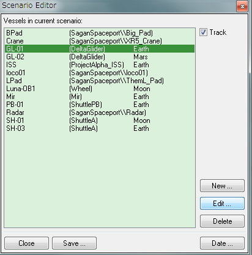
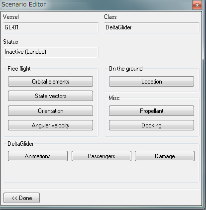
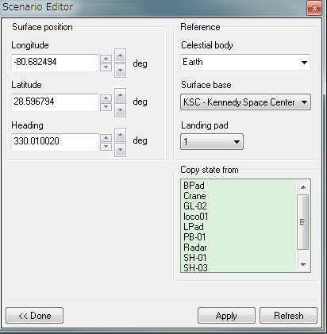
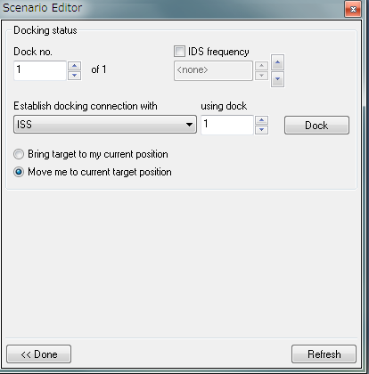
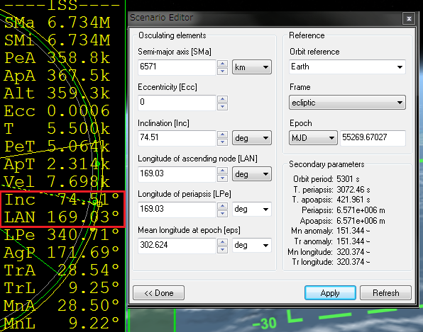
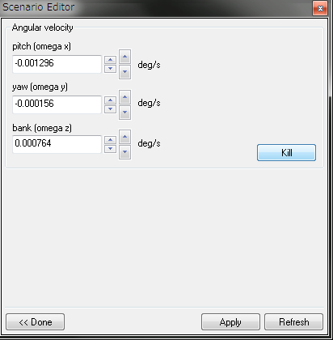

シナリオエディタを開くと、そのシナリオに含まれる宇宙船が一覧表示される。
宇宙船をクリックして選択してから、右下のEditをクリック。
軌道要素や現在位置、残り燃料などを変更できるようになる。
設定が終わったら、右下のApplyをクリックして変更を適用する。


地上にいる宇宙船の位置を変更する。
軌道上にいる宇宙船を地上に降ろすこともできる。

地上での位置を決定する。
| Longitude | 経度 |
| Latitude | 緯度 |
| Heading | 宇宙船の向き |
惑星や月などの天体を選択する。
| Celestial body | 天体（惑星とその月）の選択 |
| Surface base | 地上基地 |
| Landing pad | 着陸パッド |
滑走路を指定することはできない。
地上にいる他の宇宙船から、位置情報をコピーする。
これを使うと、他の宇宙船と同じ位置に移動する。
Orbiterには宇宙船どうしの衝突判定はないので、2機が重なり合うことになる。
その他の項目。
推進剤の残量を変更する。
宇宙船および宇宙ステーションとドッキングする。

相手の宇宙船とドッキングポートを選んで、Dockをクリックするだけ。
Dock no.が自機の、using dockが相手のドッキングポートを指す。
Bring targetなら、相手がこちらの現在位置に移動する。
Move meなら、こちらが相手の現在位置に移動する。
軌道要素や角速度など、宇宙船の軌道上での状態を決定する。
宇宙船の軌道要素を決定する。

黄道面を基準にするか、赤道面を基準にするか決める。
他のMFDと併用する場合は、同じ基準を参照するように設定する。
軌道長半径。楕円軌道の長半径を指定する。
地球のまわりをほぼ完全な円軌道で周回する場合、6571kmなら高度200kmになる。
軌道離心率。0にするとほぼ完全な円軌道になる。
軌道傾斜角。基準となる平面（黄道もしくは赤道）からの傾きを指定する。
昇交点黄経／赤経。軌道の傾きは同じままで、向きが変わる。
軌道傾斜角が同じでも、LANが違えば軌道面は一致しない。
打ち上げを省略して、ターゲットと同じ軌道面に宇宙船を配置することができる。
ISSとのランデブーや、地球から月へのフライトを練習するのに使える。
Semi-major axisを6571km、Eccentricityを0（ゼロ）にする。
Orbit MFDを開いてISSをターゲットする。
Orbit MFDの右側にISSの軌道要素が表示されているので、IncとLANを確認する。
同じ数値をシナリオエディタに入力。
右下のApplyをクリックすると、ISSと軌道面が一致した状態になる。
角速度。
宇宙船が回転する速度を変更できる。

宇宙船が回転してコントロールできなくなった場合は、Killをクリックすると強制的に止めることができる。